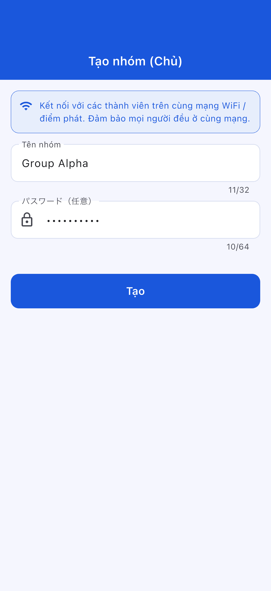
Tên ứng dụng: OffLink
Đối tượng sử dụng: Người muốn thực hiện cuộc gọi thoại nhóm trong cùng mạng WiFi
Ngày tạo: 9 tháng 3, 2026
Cập nhật lần cuối: 11 tháng 4, 2026
OffLink là ứng dụng cho phép bạn thực hiện cuộc gọi thoại nhóm không cần Internet trong cùng môi trường WiFi / điểm phát sóng. Sử dụng giao tiếp P2P qua WebRTC để mang đến cuộc gọi thoại có độ trễ thấp.
Ví dụ về các tình huống sử dụng:
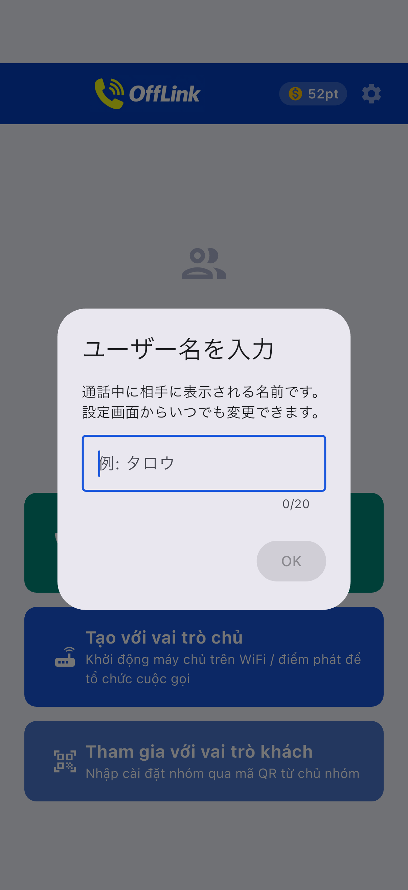
Màn hình chính ngay sau khi khởi động ứng dụng.
OffLink hoạt động ở chế độ WiFi LAN. Tất cả mọi người đều kết nối vào cùng một mạng WiFi để thực hiện cuộc gọi.
Lưu ý: Không cần kết nối Internet.
| Vai trò | Thiết bị hỗ trợ | Mô tả |
|---|---|---|
| Chủ phòng (Host) | Android / iPhone | Thiết bị quản lý cuộc gọi |
| Khách (Guest) | Android / iPhone | Thiết bị tham gia cuộc gọi |
Chú ý: Tất cả mọi người phải kết nối cùng một mạng WiFi.
| Quyền | Mục đích | Ảnh hưởng khi từ chối |
|---|---|---|
| Micro | Cuộc gọi thoại | Không thể gọi |
| Camera | Quét mã QR | Không thể đăng ký nhóm qua QR |
| Thiết bị lân cận (WiFi) ※Android | Phát hiện mạng WiFi | Không thể phát hiện Host |
| Vị trí ※Android | Quét WiFi (yêu cầu OS) | Không thể lấy SSID WiFi |
| Bluetooth ※Android | Kết nối tai nghe | Không thể sử dụng tai nghe |
| Thông báo ※Android | Thông báo mời gọi | Không có thông báo nền |
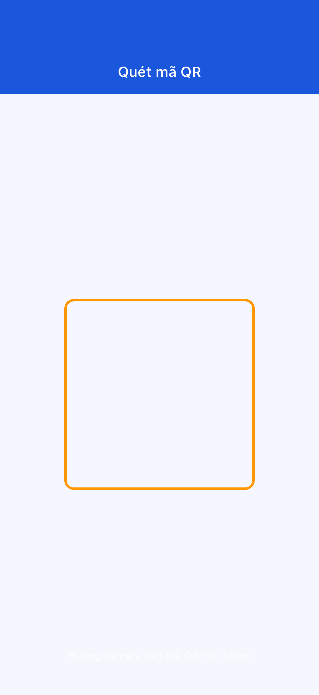
Nếu từ chối quyền: Vào "Cài đặt" → "Ứng dụng" → "OffLink" để thay đổi.
Bước 1: Tất cả kết nối cùng WiFi
Bước 2: Nhấn "Gọi ngay" (nút màu xanh lá)
Bước 3: Nhập tên người dùng
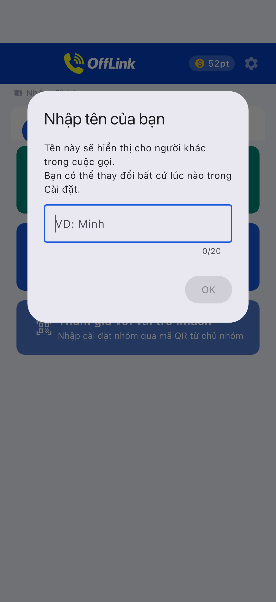
Bước 4: Chọn gói và bắt đầu cuộc gọi
Bước 5: Thông báo mời cuộc gọi sẽ tự động gửi đến các thành viên
Bước 1: Nhấn "Tạo với tư cách Host" (nút màu xanh dương)
Bước 2: Nhập tên nhóm và mật khẩu rồi nhấn "Tạo"

Bước 3: Chọn hành động tạo
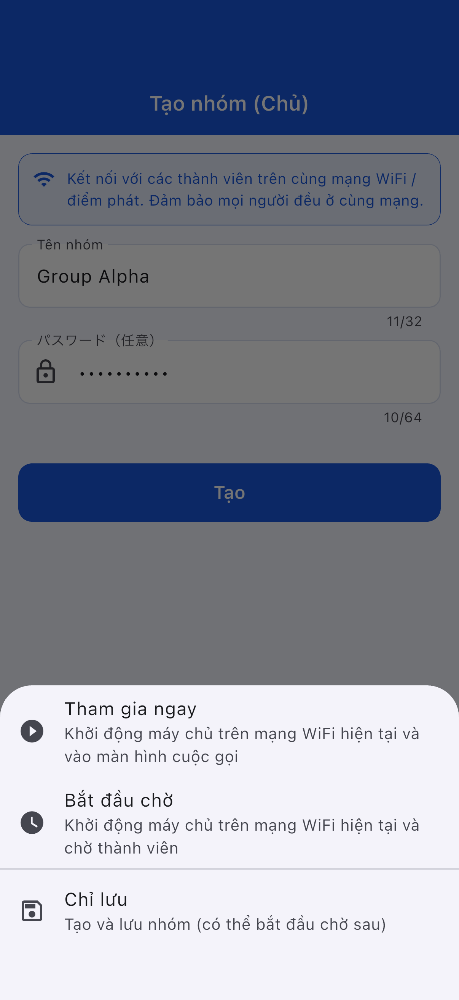
| Hành động | Mô tả |
|---|---|
| Tham gia ngay | Khởi động máy chủ và bắt đầu gọi |
| Bắt đầu chờ | Khởi động máy chủ và đợi |
| Chỉ lưu | Có thể bắt đầu sau |
Bước 1: Nhấn "Tham gia với tư cách Guest" (nút màu xanh nhạt)
Bước 2: Chọn phương thức tham gia
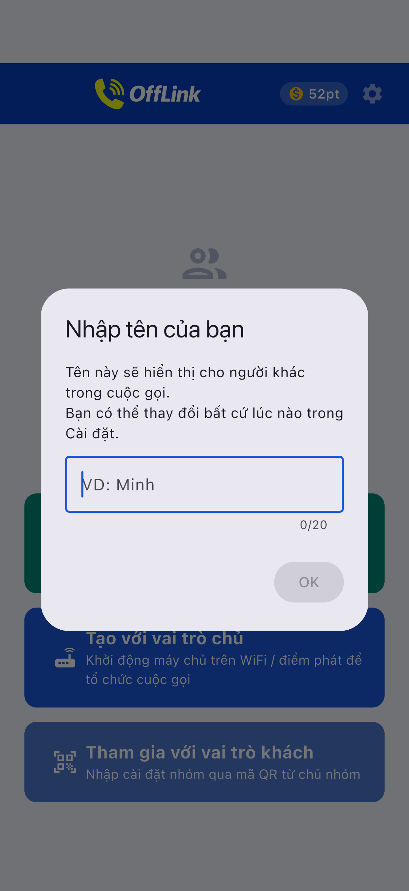
| Phương thức | Thao tác |
|---|---|
| 📱 Quét mã QR | Quét mã QR của Host |
| 📋 Dán mã | Dán mã được chia sẻ |
| ✏️ Nhập thủ công | Nhập trực tiếp |
Chia sẻ mã QR (phía Host):

Dán mã (phía Guest):
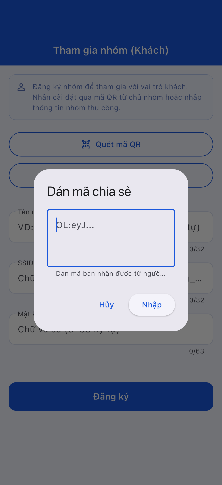
Bước 3: Nhấn "Đăng ký"
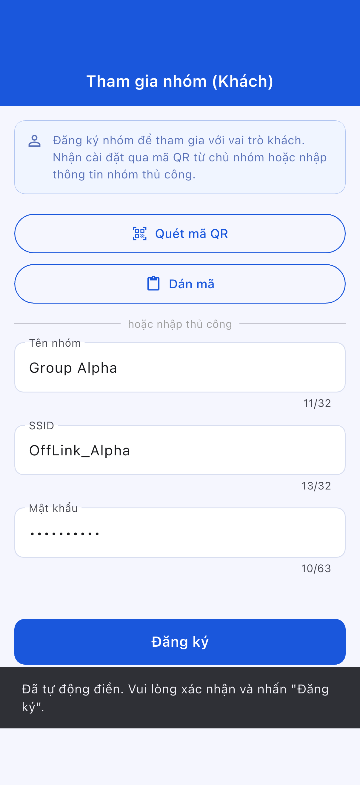

Màn hình tham gia Guest:
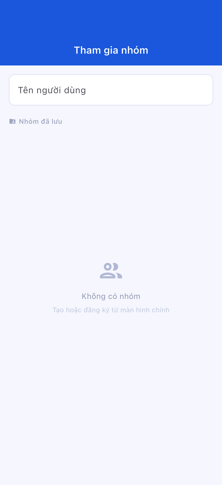
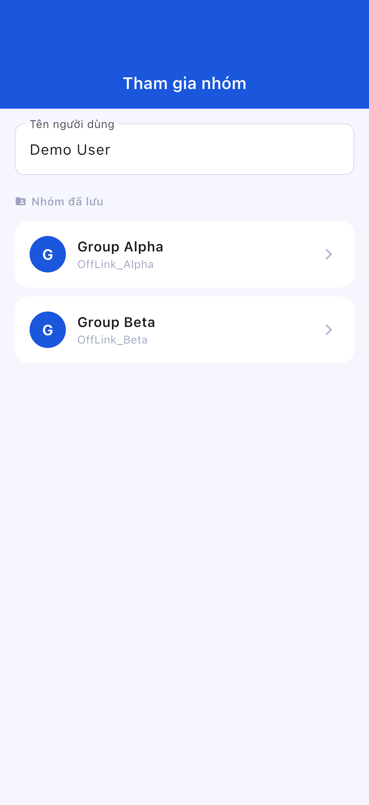
Màn hình chờ:
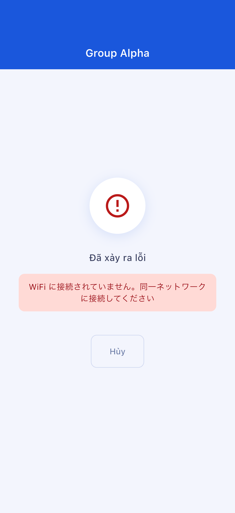
Màn hình cuộc gọi:
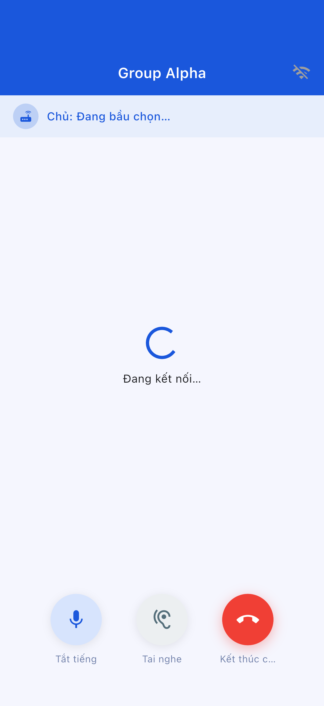
| Nút | Chức năng |
|---|---|
| 🎤 Tắt tiếng | Bật/tắt micro |
| 🔊 Chuyển đổi đầu ra âm thanh | Loa / Bluetooth / Tai nghe |
| 🔴 Kết thúc cuộc gọi | Rời khỏi cuộc gọi |
| Gói | Điểm tiêu thụ | Số người tham gia tối đa |
|---|---|---|
| Standard | 10 điểm | 4 người |
| Large | 20 điểm | 10 người |
Không thể tự động khởi động từ trong OffLink. Hãy thiết lập thủ công.
Vào "Cài đặt" → "Ứng dụng" → "OffLink" → "Quyền" để thay đổi
| Mục | Nội dung hạn chế |
|---|---|
| Số người tham gia tối đa | Standard: 4 / Large: 10 |
| Phương thức gọi | Chỉ WiFi LAN |
| Chạy nền | Giới hạn tùy thiết bị |
| Giới hạn lưu nhóm | Free: 5 / Premium: Không giới hạn |
| Mục | Khuyến nghị |
|---|---|
| Android | 5.0+ (API 21+) |
| iOS | 13.0+ |
| Pin | Khuyến nghị 80% trở lên |
| Bộ nhớ | 100MB trở lên |
| WiFi | Router / Điểm phát sóng / WiFi di động |